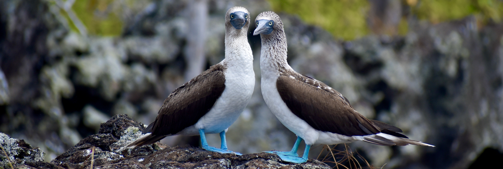

Guide to the Galapagos Islands

The Galapagos Islands are truly magical. However, navigating the rules of the national park can seem tricky, and online sites will make it seem like you need to pay for an expensive tour every day. After studying and living in the Galápagos for a semester, I have compiled a list of all of the free activities and best value paid activities in the Galapagos. You don’t need to spend your trip on expensive tours every day!
This guide is meant to help you plan a fun and comprehensive trip for a low cost by providing you with a list of free activities that are not publicized online. Everything that I have listed as free or cheap does not need a guide, and all paid tours automatically come with a guide. It’s easier than you think!